Team Data Crucible · Fleethacker Norfolk · Nov 4–6, 2026
A judges’ brief: how one offline suite of Sailor-built tools answers all six Fleethacker use cases on a locked-down Navy workstation, with a human in authority and an audit trail behind every action.
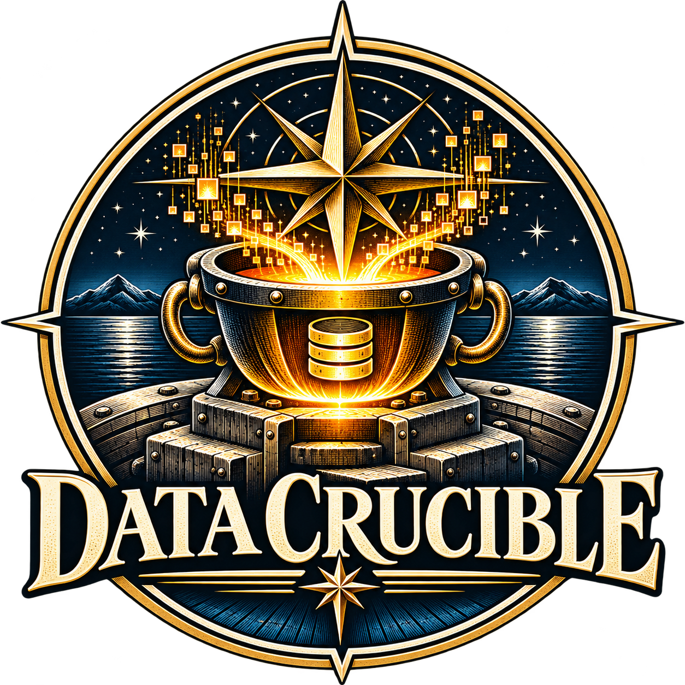
19 tools, one organization
Windows PowerShell 5.1 + a browser
No admin rights, nothing installed
Loopback only, works offline
MIT licensed
Start here · the pitch, one minute forty
Opening scene, 37 s, click to play: a mine close aboard, the uplink gone, and the order “then we get our inference local.”
The pitch beats: 0:00 paper log on a carrier at 0200 · 0:12 a developer blocked by app control · 0:35 the boat · 1:00 the SCOPE catalog · 1:14 every tool’s page · 1:21 Bridge Warden captured live · 1:27 the ask.
Crew, boat and carrier are fictional. Tool pages are the tools’ own screenshots with synthetic data; Bridge Warden is captured from the running app. Source: Commissioning pitch v6 and intro cut
2
Bottom line up front
Nineteen Sailor-built tools in one GitHub organization. Five of them fit Paperless Underway. One governance layer, Bridge Warden, answers both AI use cases. The other three ride the same mail, log and dashboard pipeline.
Confirmed running in user context on NMCI, Nautilus endpoint devices and Nautilus virtual devices. No admin rights, no installer, no cloud. CANES afloat is the one gap, and it has a dated 30/60/90 plan.
Every model call goes through one router, every key through one vault, every action into a hash-chained log. Approval points, prohibited actions and a two-second SAFE-STOP are built in, not promised.
Anchor entry
Paperless Underway (challenge 36): our evaluator’s only Applicable verdict, scored 95. Estimated rubric total 76 today, 89 once the listed gap tools land. Bridge Warden stays in play for AI automated systems and MORDECAI.
Data Crucible · Fleethacker Norfolk · Judges’ brief
3
Design for Fleet conditions · Rule 9
Standard user. No admin rights, no installers, no package managers.
Application control. No Node, Python, git.exe, PowerShell 7 or prebuilt DLLs.
Connectivity that comes and goes: EMCON, DDIL, expeditionary units with no link at all.
What ships is Windows PowerShell 5.1, .NET Framework 4.8 and an Edge or Chrome browser. Nothing else.
One double-click on a .bat starts powershell.exe for that process only. Machine policy is never changed.
Engines ship as C# source compiled in memory at start. No DLL, no NuGet, no third-party code.
The browser is the product. Each server binds to 127.0.0.1 only and checks Host and Origin on every request.
Released as a zip with a SHA-256 beside it, verified offline. A CI gate fails any non-loopback listener or binary.
Source: edge-ops target environment, comms TECH-STACK-BASELINE and LISTENER-EVALUATION (workstation run 25 Oct 2026)
4
The suite · how the apps use each other
People and agents
A Sailor in the browser, or an agent through the Fleet Action CLI and API: app noun verb --json, one loopback token, a person reviews the result.
Work apps
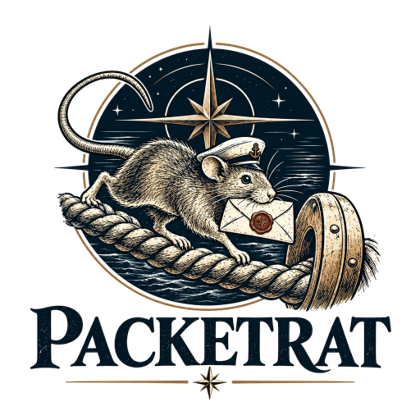
PacketRat
mail triage
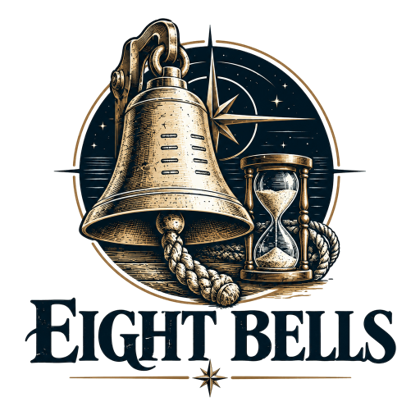
Eight Bells
watch logs
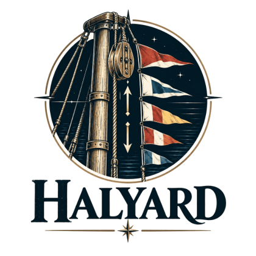
Halyard
backlog
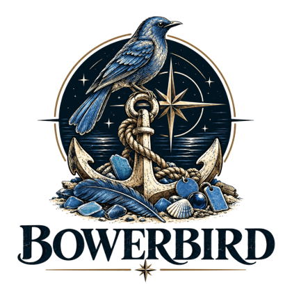
Bowerbird
files, OCR
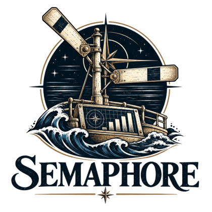
Semaphore
dashboards
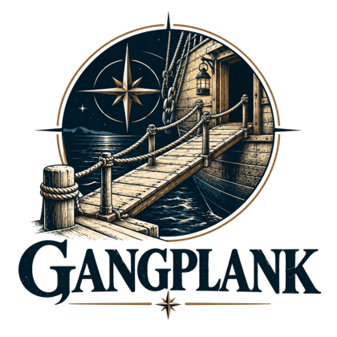
Gangplank
git access
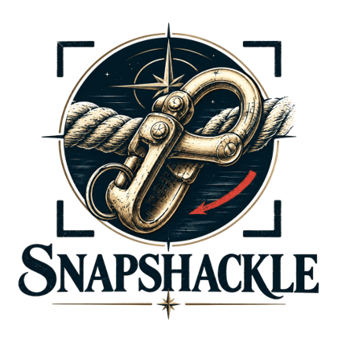
SnapShackle
capture
Shared services
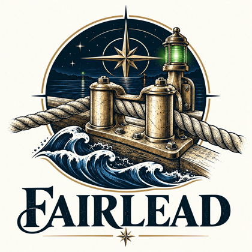
Fairlead
one address for every model, local first
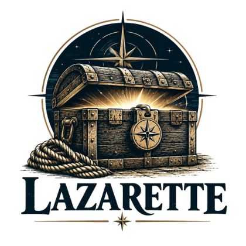
Lazarette
the one vault; keys by item name
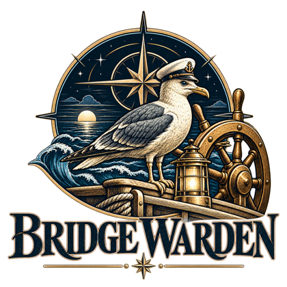
Bridge Warden
governance between agents and the ship
Engines and platform
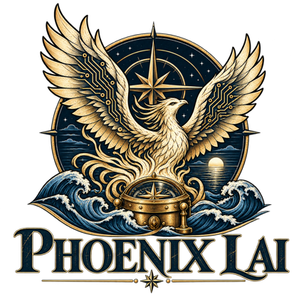
Phoenix LAI Gemma on the GPU
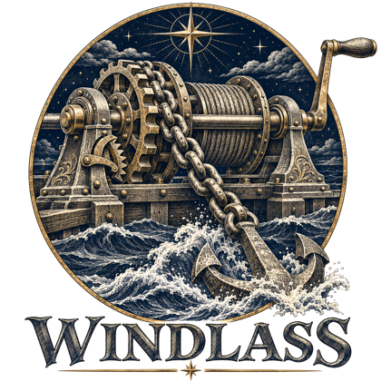
Windlass 70B models on CPU
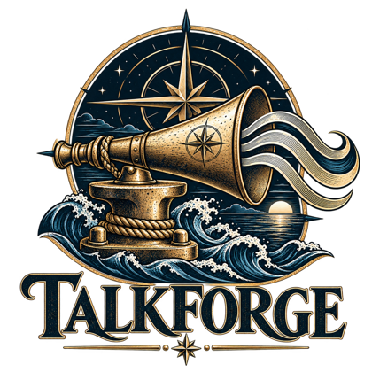
TalkForge offline voice
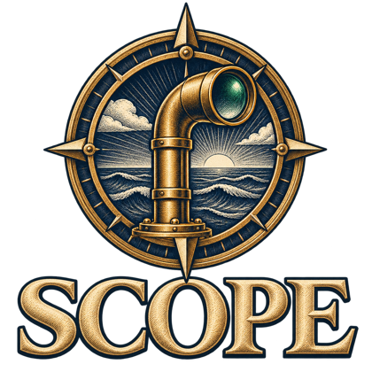
edge-ops SCOPE catalog, ports, UI kit
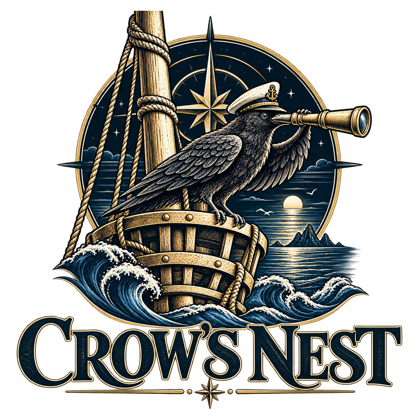
Crow’s Nest use-case evaluator
Also in the organization: Capstan, Scrimshaw, Shellback, Data Noodler, Lazarette Lite, Sea-Trials, Signal-Gun, Bosun, Watch-Bill. Source: Fleet Relationship Map, 30 Oct 2026
5
Six use cases · one suite
Anchor · challenge 36
PacketRat · Bowerbird · Semaphore · Fairlead · Lazarette PDF engine · edge-ops
Live before the event. Evaluator verdict Applicable, 95. Form validation and sync on reconnect are event work.
Challenge 9
Bridge Warden · Fairlead · Phoenix LAI
Live before the event. Governance layer over five simulated agents, evaluated through three rounds. Second ship class is event work.
Challenge 16
Bridge Warden: conflict detector, authority matrix, quarantine
Engine live. The shared-actuator arbitration scenario is staged at the event on the existing simulator.
Challenge 24
PacketRat · Eight Bells · Fairlead Bearing · Halyard hand-off
Mail path live. The Navy message-format parser and routing to the right POC are event work on that path.
Challenge 12
PacketRat parser · Semaphore timeline · Eight Bells chronology · TalkForge alerts
Pipeline live. The OPTASK grammar and the timeline dashboard are event work on the same pipeline.
Challenge 8
Halyard approval gateway · PacketRat routing · Lazarette PDF forms · Ship’s Log · Gangplank
Parts live. One draft-to-release workflow is assembled from them at the event. Evaluator verdict Maybe, 54.
Verdicts are from our own Crow’s Nest evaluator (keyword fit, 28 Oct snapshot). Prior work is disclosed per Rule 7; the event-start git tag marks the boundary.
6
Challenge 36 · Paperless Underway · the Autonomous Shipboard Enterprise
1
SnapShackle captures the handwritten training log on the tablet, with a sidecar of tags and OCR text.
2
Bowerbird reads the text, proposes a name and a folder, and keeps a durable move journal. Propose only; a person confirms.
3
Lazarette’s PDF engine fills the official requisition or SAAR form, AcroForm or dynamic XFA, in the browser. Signatures stay behind approval.
4
Event work: validate against the form’s rules (Quill) and queue in a store-and-forward outbox that syncs and routes on reconnect (Tideline).
1
PacketRat reads a week of exported .eml and .msg files, no Outlook needed, and triages them into a human-reviewed action queue.
2
Status updates are drafts through Fairlead. PacketRat never sends mail; a person reads and sends.
3
Verified actions hand off to Halyard as versioned fleet-handoff files; counts flow to a Semaphore dashboard. Every action lands in the hash-chained Ship’s Log.
4
Event work: Navy message formats, routing each task to the right POC, and the source line on every queued action.
Done: .eml/.msg without Outlook
Done: log show / log verify hash chain
Done: human-authority page, CLI, API, enforced by a test
Done: one-page path to fleet checked against source
Rubric estimate: 76 today, 89 after the fixes
Owner named in the challenge: NAVSUP Business Systems Center, NAVIFOR, Navy Reserve Force. Source: win plan 1 Nov, PacketRat docs
7
Challenge 9 · AI automated systems · Bridge Warden
Agent intent
Authenticate
Authority
Safety limits
Compare agents
Resolve or ask a human
Execute
Hash-chained ledger
| The challenge asks | Bridge Warden answers |
|---|---|
| Which agents are active? | Agent registry with heartbeat; worker tiles in Warden Control |
| What can each access and do? | Read scopes, tools and autonomy level per agent; the Authority Matrix page |
| Where do agents conflict? | Conflict detector: resource, objective, oscillation, cumulative |
| How are unsafe interactions caught? | Constraint checks, runtime monitors, anomaly detection, auto-containment |
| How do operators intervene? | Pause, constrain, override, roll back; a two-second hold on SAFE-STOP stops every agent |
0
unsafe actions reached the actuators in the rogue-agent scenario; contained in about 3 s
46 of 53
actions on time in evaluation round 3, with 0 hits
11.5 s
median reaction, down from 29.4 s in round 1
60 MB
backend RAM, about 0.01 core, zero outbound bytes: one low-power box
All figures measured in simulation on a dev laptop, five AI agents on a synthetic ship. Source: bridge-warden metrics.md and eval REPORT.md
8
Challenge 16 · MORDECAI, adult supervision for shipboard AI
Navigation agent
Intent: come right to 040 to open the CPA on a crossing contact
Damage-control agent
Intent: hold course and speed while flooding aft is isolated
Bridge Warden
Same tick: the conflict detector flags both intents on one resource, the rudder.
Authority matrix: which agent may command that actuator in this condition, and at what autonomy level.
Resolve or escalate: policy decides the safe default; anything above its authority goes to the OOD with a two-minute decision window.
Log: both intents, the decision and who made it, in the hash-chained ledger. Reversible.
One actuator
receives one checked order, or none
May do
Scoped reads and tools per agent; recommend within its autonomy level
Never do
Touch an actuator directly; exceed action limits; act while quarantined
Needs approval
Escalated conflicts; a periodic system check every two minutes, two misses and it SAFE-STOPs itself
How to stop
Pause or constrain one agent; hold SAFE-STOP two seconds to stop them all
Engine and the four controls are prior work. The shared-actuator scenario is staged at the event on the existing simulator (contact, overheat, storm, rogue injects). Quarterdeck, the Warden as a shared library for any Fleet app, is planned.
9
Challenge 24 · Automated message traffic task and event extraction
PacketRat reads the command’s traffic: exported .eml and .msg, classic Outlook, or Graph when authorized. Offline from files.
Deterministic rules first, then AI through Fairlead on a strict wire protocol. Bearing quotes the exact lines an answer came from.
A person works the action queue: accept, re-prioritize, dismiss. Only subject, sender and reason are stored, never bodies.
Verified items hand off to Halyard as backlog drafts with a link back to the message; a draft reply opens for a person to send.
Counts export to a Semaphore dashboard; Eight Bells cross-checks events against the watch log and flags chronology gaps.
Live before the event
Triage rules and draft parsing, the strict AI wire protocol, command and API parity, the Files provider, counts export, the Halyard hand-off format, the hash-chained action log. All checked by CI on Windows PowerShell 5.1 with fakes for Outlook and the model.
Event work
A parser for formatted Navy message fields (originator, date-time group, subject, references, tasking lines), routing each task to the right point of contact, and the source line shown on every queued action. Each is a rule set and a test, on the pipeline above.
Measured burden, Rule 2
PacketRat’s burden record stores a hand-timed baseline per task and the timed runs after. The minutes-saved counter is labeled an estimate until a Sailor times it. We report the measured figure, not the counter.
Source: PacketRat docs (ACTION-LOG, HUMAN-AUTHORITY, HALYARD-HANDOFF, BURDEN-RECORD), Eight Bells README, Fairlead BEARING
10
Challenge 12 · Electronic OPTASK message parser and timeline visualizer
1
Parse. The OPTASK text goes through PacketRat’s parser, with an OPTASK grammar built at the event: sets, fields, date-time groups and the ship’s own call signs. Unparsed lines are flagged, never guessed.
2
Verify. The watchstander accepts each extracted event in the queue. The source line sits beside every one.
3
Hand off. Events are written as a versioned fleet hand-off file, plain JSON or CSV on the local disk, the way every Fleet app exchanges work.
4
Visualize. Semaphore builds the per-ship timeline from a plain-English brief; the analyst reviews the chart and its SQL before it is accepted into the playbook.
5
Alert. TalkForge speaks the next event with an on-device voice; Eight Bells checks the timeline against the watch log and flags out-of-sequence times.
The grammar is a rule file, not code: a new message set or a new unit’s call signs is a configuration change. The timeline is a Semaphore dashboard definition, reusable on any thin client. Nothing is hard-coded to one ship, rating or warfare commander.
Live: the parser framework, the queue, the hand-off format, Semaphore dashboards with reviewed SQL, Eight Bells chronology checks, TalkForge offline speech and its loopback speak command.
Event work: the OPTASK grammar and the timeline dashboard definition, built on synthetic unclassified messages.
Synthetic, unclassified messages only, per Rule 4. Source: Semaphore and Eight Bells READMEs, TalkForge speak endpoint, edge-ops FLOWS.md
11
Challenge 8 · CASREP Command: unified drafting, routing and release
The originating Sailor fills the CASREP fields once, in the browser. Lazarette’s PDF engine fills the official form; format rules are checked before routing.
Halyard’s approval gateway carries it up the chain of command: one holder at a time, a write lease, a journal with rollback. It writes only what a person approves.
Comments and redlines are reviewed versions, not paper mark-ups. Gangplank gives people without Git training a guarded review and merge flow.
PacketRat drafts the release message from the approved record. A person releases it; the tool never sends on its own.
Every step lands in the hash-chained Ship’s Log. Semaphore shows open casualties, holders and parts priority for the command and the type commander.
Why this returns readiness
Today a CASREP is drafted in one tool, walked around for chop in another, marked up on paper and released as a message, with no single source of truth. Here the record never leaves one audited store, so parts priority starts the moment the casualty is written, not when the paper finds its way back.
Live before the event
Lazarette’s AcroForm and XFA form engine, Halyard’s approval gateway with journal and rollback, Gangplank’s guarded review and merge, PacketRat’s drafts and action log, Semaphore’s dashboards and a synthetic readiness dataset in progress.
Event work
Wiring the five steps into one screen with one status, on sponsor-style mock records, offline, with sync on reconnect through the shared outbox. Evaluator verdict today: Maybe, 54, because that single workflow is not yet assembled.
Notional unclassified records only. Source: Halyard, Gangplank, Lazarette, PacketRat and Semaphore READMEs; win plan 1 Nov
12
Fleet-Ready Definition of Done · required of every entry
1 · Runs offline
17 yes · 1 partial · 1 no
2 · Human authority
8 yes · 8 partial · 3 no
3 · Cites sources
2 yes · 4 partial · 13 no
4 · Audit log
6 yes · 8 partial · 5 no
5 · Syncs on reconnect
1 yes · 2 partial · 16 no
6 · Path to fleet
0 yes · 8 partial · 11 no
Blue is yes, brass is partial, grey is no. Self-graded estimates against each repo’s default branch on 1 November; 15 of 19 repos scored higher than on 28 October. Points are being lost on the rules, not the code.
| Tool | Closes | Status |
|---|---|---|
| Bearing | Cites sources (Fairlead) | Built, opt-in |
| Ship’s Log | Hash-chained audit log | Built, two apps |
| Plimsoll | Path to fleet, ISSM package | One page done |
| Tideline | Sync-on-reconnect outbox | Event work |
| Quarterdeck | Human authority library | Event work |
| Quill | Handwritten forms to PDF | Event work |
| Muster | Burden timing kit | Data half built |
| Fathom | Dropped-link emulator | Event work |
Source: Data Crucible win plan, 1 November re-grade of all 19 repos
14
How the judges score · what we put against each criterion
| Criterion | Weight | Our evidence | Anchor now | After fixes |
|---|---|---|---|---|
| Warfighting and deckplate impact | 30 | Named users (expeditionary unit, command staff, OOD); hand-timed before-and-after burden through PacketRat’s burden record and Muster; Bridge Warden’s 0 unsafe actions and 11.5 s reaction | 75 | 90 |
| Speed to fleet | 20 | Runs today on NMCI and Nautilus devices in user context; one .bat, no install; offline by default; a dated CANES 30/60/90; demo rehearsed with the link cut | 80 | 90 |
| Fleet scalability | 20 | Configuration over code: rules, grammars and dashboard definitions; shared formats between tools; the same router, vault and warden under every app; MIT licensed | 75 | 85 |
| Barrier removal | 15 | No re-keying from mail to backlog to dashboard; forms filled once; CASREP in one store; a friction log kept from kickoff with owners and recommended actions | 80 | 95 |
| Judges’ discretion | 15 | One UI kit across the suite, Section 508 gate in CI, live demos not slides, approval points, SAFE-STOP and hash-chained logs in the demo path | 70 | 85 |
| Weighted total, Paperless Underway | 100 | Bridge Warden lane for comparison: 70.2 now, 83.0 after its listed actions | 76.0 | 89.0 |
Rule 2, measured burden: we show hand-timed minutes, not an estimate counter.
Rule 7, prior work: the event-start git tag in every repo; a prior-work table per entry.
Rule 11, beyond Friday: mission owner, technical owner, next experiment, resources, 30/60/90.
Scores are our own estimates of the anchor repo (PacketRat) from the 1 November win plan, criterion by criterion. Weights are the event’s published judging model.
15
Build, test and demonstrate · Rule 3
17
One per tool, rendered by Signal-Gun from each repo’s DEMO.md with Capstan and TalkForge, on synthetic data. The next four slides play an excerpt of each.
5.1
Every repo’s tests run on self-hosted Windows runners in powershell.exe, with fakes for Outlook, Graph and the model. A Linux job runs the same suites under pwsh.
1
Fleet Gate fails non-loopback listeners, binaries, large files, military hostnames, sensitive markings and contrast below the accessibility bar.
7
Sea-Trials: a tester on a locked-down workstation walks each tool in Chrome, records what happened and exports one JSON file; failures become GitHub issues.
Verify it yourself
Run log verify in PacketRat or the audit verify route in Eight Bells and watch the chain report its first broken line after an edit. Re-run PacketRat’s inventory test and see the path-to-fleet page checked against the source.
Unplug the network
Three GPU machines run the suite offline through the event, with the models served locally by Phoenix LAI. Reconnection happens only to upload progress. The demo is rehearsed with the link cut.
Read the boundary
Every repo carries the event-start tag. The commit log after it is the event work; the prior-work table before it is disclosed per Rule 7. Models, datasets and services are listed in each entry’s disclosure page.
Source: Commissioning video index, comms RUNNERS.md and fleet-gate, Sea-Trials README, FLEETHACKER-OFFLINE-PLAN.md
16
Demo reel 1 of 4 · the anchor tools
Reads fourteen invented messages, shows the reason and source for every action, drafts a reply and sends nothing. Includes a timed comparison against doing it by hand.
Two agents ask for the same rudder, a violated boundary goes to a human, the operator decides, a typed SAFE-STOP, and the hash-chained ledger. Thirteen agents on a synthetic ship.
Seven screenshots named Screenshot, date, time. AI vision through Fairlead proposes honest names with reasons; nothing moves until you type APPLY, and UNDO restores every original.
One local address for every model, one key per tool, a trace of every request. The log keeps the decision, never the prompt. Mark a request private and it never leaves the PC.
Each frame plays the first 40 seconds; click to pause. The full narrated demos, with captions, are in the Commissioning repository. All data is synthetic.
17
Demo reel 2 of 4 · records, turnover and the vault
Reads the watch log, flags what needs a second look and drafts the turnover offline by rules, with a source line behind every point. Lessons hand off to Halyard, counts to Semaphore.
Finds backlog drift, drafts the fix through Fairlead and holds every change as a proposal only a person can approve. Walks the key setup from zero: Lazarette, then Fairlead.
Describe the dashboard in plain English, review what it drafts, load Halyard’s backlog export and answer “can we commit the next sprint?” with a timed PowerShell-versus-Semaphore comparison.
A browser window on the Windows Credential Manager you already have. Fleet tools fetch a secret by name; a missing name is refused; nothing outside its prefix is listed.
Each frame plays the first 40 seconds; click to pause. The full narrated demos, with captions, are in the Commissioning repository. All data is synthetic.
18
Demo reel 3 of 4 · capture, redaction and learning
Capture a ticket window, let Smart redaction find and cover the email, phone number and deploy token, and keep an OCR record that proves the values are gone before the picture is shared.
Record a browser tab, cut it, blur the customer’s details, caption it with Windows’ offline recogniser and export an MP4, then check the blur is in the pixels. Media never leaves this PC.
Turn a procedure into a graded course, draft the first quiz through Fairlead, review it, and publish a SCORM package the LMS can track, checked before anyone uploads it.
A watchstander who never learned Git adds maintenance notes on a branch of their own. The Sentinel scan blocks a credential file, writes are confirmed first, and the audit trail records it all.
Each frame plays the first 40 seconds; click to pause. The full narrated demos, with captions, are in the Commissioning repository. All data is synthetic.
19
Demo reel 4 of 4 · engines and analysis
Gemma 4 on your own GPU through the driver’s Vulkan, served as an OpenAI API, and a chat that edits project files only in a jailed folder with a backup before every edit. The model never runs a command.
A seventy-billion-parameter model hauled through memory one layer at a time on an ordinary PC, live, and registered in Fairlead as the deep-local route. Slow on purpose; never stops mid-reply.
A synthetic fuel log of a million and a half rows that no spreadsheet will open: imported, questioned in plain SQL and published as a dashboard, with a record that the browser made no non-local requests.
A résumé is a claim, not proof. Only confirmed skills count, team coverage appears only for three or more people who opted in, and the aggregate brief names no one.
Each frame plays the first 40 seconds; click to pause. Also in Commissioning: The Long Turnover concept film (4:57). All data is synthetic.
20
Plan beyond Friday · Rule 11 · path to fleet
NMCI
Shore desktops. Confirmed, user context, no admin
Nautilus endpoint devices
Flank Speed endpoints. Confirmed, with working CAC processes
Nautilus virtual devices
Flank Speed virtual desktops. Confirmed, user context
CANES afloat
The gap. Needs an approved install and hosting path
Day 0 · 5 Nov
Suite live. Submission: repo, demo video, this brief, path to fleet.
Day 30 · 5 Dec
CANES path selected from three partner options; decision memo; package inventory with SHA-256 and SBOM; funding request submitted.
Day 60 · 4 Jan
Install on a CANES test enclave; Sea-Trials checklists pass; ISSM accepts the security package; go or no-go.
Day 90 · 3 Feb
First ship or ships; user guide and a session for shipboard IT; support owner named; issue intake from ship to shore.
What our own ATO assessment says, plainly
Compile-at-launch C# is blocked under Constrained Language Mode, and no repo tracks an SBOM yet. Remediation is known: signed, prebuilt engines where policy allows, an SBOM per release, and one ISSM-supervised test per baseline before day 60. The loopback discipline and the CI gate are strengths an assessor can cite today.
Owners and asks
Mission owner named in the challenge for the anchor: NAVSUP Business Systems Center, NAVIFOR, Navy Reserve Force. Technical owner: Team Data Crucible. Asks by day 30: funded NAVSEA 04X, NSSO and SMO hours, a named ISSM and approver, a test enclave. Main risk is funding: this is not the team’s day job.
Source: comms ROADMAP-30-60-90.md (status 4 Nov) and the Fleet ATO feasibility assessment (3 Nov)
21
Document the friction · Rule 10 · OSW return on investment
| Barrier | Responsible | Recommended action |
|---|---|---|
| Application control blocks prebuilt DLLs, so engines compile from source at every start; Constrained Language Mode would block that too | Endpoint policy owners, ISSM | An approved signing path for Sailor-built tools; one supervised test per baseline |
| No authorization boundary or sponsor to start an ATO; no SBOM in any repo | Mission owner, program office | Name the ISSM by day 30; SBOM per release from the manifest |
| Classic Outlook access on managed workstations could not be validated off the enclave | Workstation owners | The .eml and .msg file path removed the dependency |
| No CANES install or hosting path for a Windows user-context suite | PMW 160, partner options | Select the path by 5 December |
| Hackathon portal keys and limits: the evaluator skipped its scheduled runs until secrets existed | Team | Set secrets and dry-run before any scheduled job matters |
Developing the skills of a digital workforce
Nineteen tools built by Sailors and civilians on a stack anyone with a Navy laptop can run; Shellback records the skills gained; Scrimshaw turns a demo into a course.
Accelerating platform adoption
Packaged as release zips with hashes on the edge-ops hub; one install story for every tool.
Clarifying friction points to agile delivery
The log on the left, with owners, plus a written ATO feasibility assessment.
Learning and adaptation during war
Local models under EMCON, Eight Bells lessons learned with evidence, Bridge Warden keeping decisions human under contested conditions.
The friction log is kept live from kickoff in each entry’s friction-log.md. Source: ATO feasibility assessment, win plan Crow’s Nest notes, PacketRat PATH-TO-FLEET
22
The ask
Select Data Crucible and you select a suite that already runs on three Navy environments, a governance layer that keeps a human in authority over every agent, and a team that names its own blockers. The next step is written down: a CANES path by 5 December, a test enclave by 4 January, a ship by 3 February.
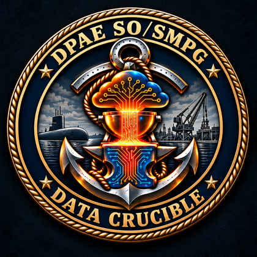
Anchor entry
Paperless Underway, challenge 36, both tracks
Governance entry
Bridge Warden for AI automated systems and MORDECAI
Same pipeline
Message traffic, OPTASK and CASREP on PacketRat, Halyard and Semaphore
Everything
Offline, no admin, loopback only, MIT, with a human in authority